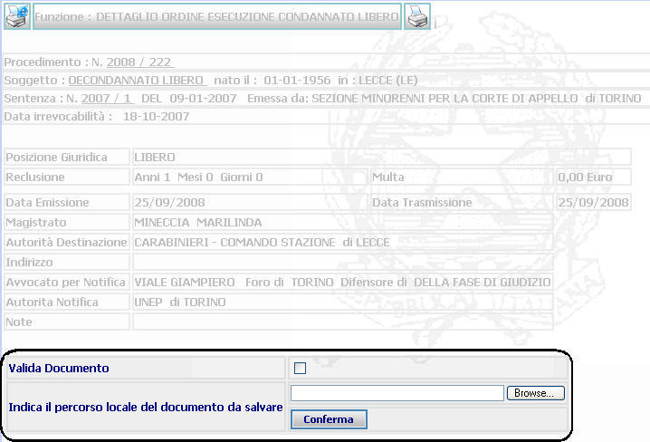
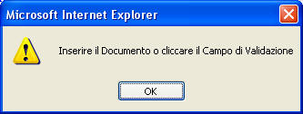

VALIDAZIONE DOCUMENTO: La funzione, consente di validare e memorizzare in modalità di sola lettura il documento elaborato rendendo immodificabile il provvedimento che è stato validato.
LE MASCHERE VIDEO
La funzione in esame viene realizzata attraverso l'utilizzo della parte evidenziata nella seguente maschera che riporta il Dettaglio di un qualsiasi provvedimento generato e stampato:

COME FARE PER ...
| Per Validare il documento occorre : |
- Spuntare la casella relativa alla Valida del Documento
- Nel caso che il documento generato dal sistema sia stato modificato, indicare il percorso locale del documento da salvare utilizzando il pulsante
- Cliccare sul tasto
per confermare;
CAMPI
Nella presente funzione è presente il seguente campo:
| NOME | DESCRIZIONE |
| Percorso locale del documento da convalidare | Nel caso che il documento generato dal sistema sia stato modificato, indicare il percorso locale del documento da salvare utilizzando il pulsante |
PULSANTI
Oltre ai pulsanti orizzontali dell'area di navigazione, sono presenti i seguenti pulsanti:
|
PULSANTE |
DESCRIZIONE |
|
|
Questo pulsante ha lo
scopo di stampare il contesto (videata) |
|
|
Questo pulsante ha lo scopo di generare, editare e stampare il provvedimento |
BOTTONI
Oltre ai comandi funzionali relativi al menù verticale sono presenti i seguenti comandi:
|
COMANDI |
DESCRIZIONE |
|
|
A fronte di tale comando, il sistema dopo aver verificato la validità dei dati specificati, termina la funzione di validazione del documento. |
|
|
A fronte di tale comando, il sistema permette di specificare, il percorso locale del documento da convalidare, nel caso esso sia stato modificato. |
CONTROLLI
|
A fronte
della pressione del bottone
|
Se l'operatore conferma senza spuntare la casella di validazione e senza indicare il percorso del file da salvare compare il messaggio

Agendo sul bottone
si ripresenta la precedente videata per completare correttamente l'operazione e per confermarla con l'apposito tasto.
Se l'operatore conferma senza spuntare la casella di validazione ed indicando il percorso del file da salvare compare il compare il seguente messaggio:

Cliccando sul bottone
il sistema prosegue riproponendo la maschera del Dettaglio del provvedimento generato.
ATTENZIONE: in questo caso, non avendo spuntato la casella di validazione, il sistema non ha provveduto alla validazione ma ha effettuato il solo aggiornamento del documento; la maschera del Dettaglio del provvedimento generato riproporrà la possibilità, attraverso il pulsante
, di generare nuovamente la stampa del documento ed effettuare in seguito la validazione.
Se l'operatore conferma dopo aver spuntato la casella di validazione, indicando o meno il percorso del file da salvare, compare il compare il seguente messaggio:
Cliccando sul bottone
In questo caso, avendo spuntato la casella di validazione, il sistema provvede, oltre all'aggiornamento del documento, anche alla validazione.
A seguito
della pressione del bottone
 , il sistema, se non ci sono errori, presenta
la maschera del Dettaglio,
nel quale, per i documenti nei quali è prevista, attraverso
il pulsante
, il sistema, se non ci sono errori, presenta
la maschera del Dettaglio,
nel quale, per i documenti nei quali è prevista, attraverso
il pulsante
 , si potrà effettuare la trasmissione telematica attraverso l'operazione di
Trasferimento Documento
.
, si potrà effettuare la trasmissione telematica attraverso l'operazione di
Trasferimento Documento
.